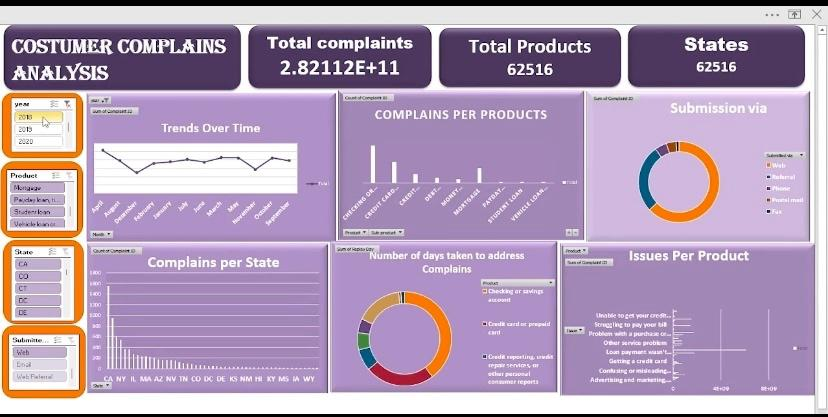

Interactive Dashboard · Excel
Analyzed customer complaints in the American banking sector using Excel.
Focused on complaint trends, response times, and company resolution rates,
presented through a fully interactive dashboard.
Tools: Excel · Pivot Tables · Charts · Interactive Dashboard

Data Analysis · SQL · Tableau

Explored seven months of stolen vehicle data from the New Zealand police
department's Vehicle of Interest database. Identified theft patterns and
delivered actionable insights for law enforcement decision-making.
Tools: MySQL · Tableau · Exploratory Data Analysis
Machine Learning · Python

Built a supervised machine learning model to predict housing prices based on
features such as area, number of rooms, and location. Conducted under mentor
guidance as part of applied machine learning training.
Tools: Python · Scikit-learn · Pandas · Jupyter Notebook
Machine Learning · Python

Developed a classification model to predict whether a loan application will
be approved, based on applicant data such as income, employment status,
and credit history.
Tools: Python · Scikit-learn · Pandas · Classification
Business Analysis · Data Insights

Comprehensive analysis of a restaurant's menu and order data to uncover
customer behavior trends. Evaluated menu performance, pricing impact, and
ordering patterns by day to deliver actionable recommendations for revenue
growth and operational efficiency.
Tools: Excel · Data Analysis · Business Insights